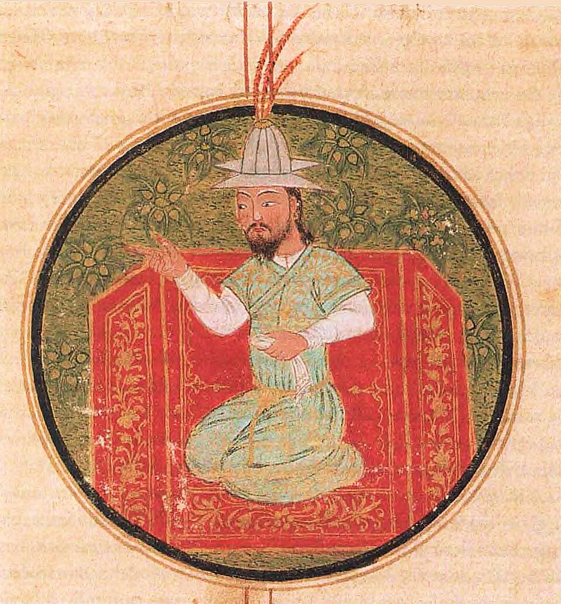

Roads to Samarkand
Every conqueror in history took ground — Timur built the roads that ground traveled on, and the roads never forgot him.

Roads to Samarkand
Every conqueror in history took ground — Timur built the roads that ground traveled on, and the roads never forgot him.
Feature map
Level-by-level features, as the figure refined them.
Set Samarkand
Action · 1 CE · designate a 5-ft Capital · lasts 1 hour.
Declare a 5-ft space you stand in to be Samarkand — the center of the world, for as long as you hold the thought. The Capital persists for 1 hour. All Roads must stay connected to the Capital via continuous segments; a segment cut off from the Capital is just ground again.
Lay Campaign Road
1 CE · once per turn while moving · up to 20 ft of personally-traversed path.
While you move, convert up to 20 ft of the path you personally traverse into 5-ft-wide Campaign Road. No road without the walking — you do not conjure roads; you earn them. You may maintain up to your proficiency bonus in segments (10 minutes each; oldest replaced first). Willing allies that start their movement on a connected Road treat the first 15 ft traveled along it as 5 ft. Road segments are visible cursed infrastructure, destructible by damage or terrain-clearing — a severed road is the cheapest victory in the campaign.
Junction Discipline
Passive · once per turn per ally.
Where two Road segments meet, a Junction forms. Once per turn, a willing ally that reaches a Junction may change direction and ignore opportunity attacks from one visible creature until it leaves the 5-ft Junction space. The crossroads is a weapon, if you have walked both arms of it.
Burn the Road Behind
Reaction · 2 CE.
When a hostile creature enters one of your Road segments, destroy the segment. The hostile makes a Dexterity save against your technique DC: on a failure it takes 2 × your PB bludgeoning/fire damage and its speed is reduced by 10 ft for the turn; on a success, half damage and no slow. The destroyed segment becomes ordinary difficult terrain. Let them chase you down your own highway and find it a trap.
All Roads Lead to Samarkand
Bonus action · 3 CE · Capital or any Junction within 120 ft.
Relocate along your connected network to the Capital or any Junction within 120 ft. The relocation traces the Road continuously — severed networks block it. You arrive where the road goes; position is the attack.
Empire of Roads
Passive · the network at full muster.
You may maintain 2 × your proficiency bonus in Road segments, and Road duration extends from 10 minutes to 24 hours. After physically traveling a route outside combat, you may stabilize one 1-mile Long Road along that route until your next long rest. Your 11th-level relocation may carry one willing adjacent creature and may use a Long Road.
Maximum, Domain, or equivalent.
Capstone material.
The Campaign Returns Home
The great working: redeployment, not damage. Up to your proficiency bonus in willing creatures on the network may use their reactions to relocate to any reachable Capital or Junction (up to 300 ft of traced network). The relocation grants no attack. You may destroy the segments they traveled; hostiles standing on a destroyed segment make your Burn the Road Behind save.
Then I Became One
He built an empire of roads. Then he became one. Relocate along your network to any point on a connected Road segment within 1 mile of traced network — not only the Capital or a Junction — bringing up to your proficiency bonus in willing adjacent creatures with you. Long Roads extend the traced range to their full length. The roads go where you walked; the war goes where you arrive.
Build-defining options.
This technique grants Innate Technique Feats — hand-authored applications of the figure's art, available in the builder's feat picker when you select this technique.